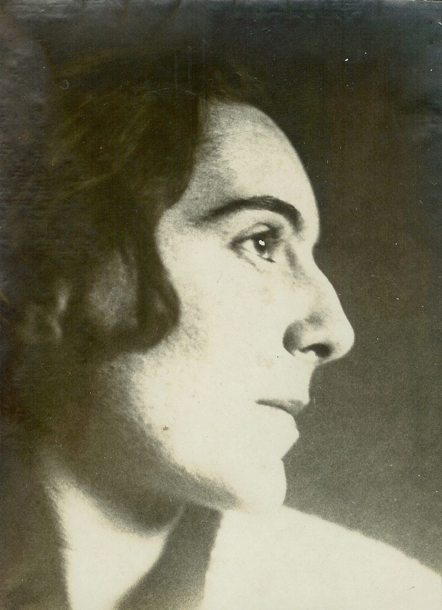

Biography
Text edited by Mariateresa Anfossi and Gianni De Moro, from the artist's artistic-biographical profile.

She is young, gentle in character, small in stature, a little shy, yet able to win her own battles — such as enrolling, in 1915, after obtaining her diploma from the "G. Schiapparelli" Technical School, in the courses of the Accademia di Belle Arti di Brera. For Silvia, the youngest of the three children born to her mother, Angela Pessina, her father, Emilio Zucchinetti, a dealer in precious goods, would perhaps have preferred a course of study more suited to placid bourgeois prospects. A natural vocation for observation and drawing sustains her, recognised and encouraged since childhood by far-sighted teachers and, above all, by her maternal uncle Emilio Borsa, a name of prestige in the artistic circles of Monza, himself a nephew of Mosè Bianchi and cousin of Pompeo Mariani.
Among the teaching staff at Brera at that time were artistic figures of note such as Cesare Tallone, but it is the sculptor Ambrogio Bolgiani, professor of Sculpture, and the painter Aldo Carpi — whom Silvia herself would recall many years later as her principal teacher — who leave the deepest mark on the young student's training. The course ends in July 1919, with an "honourable mention" to her name. Having qualified, Silvia obtains her first position teaching drawing, but her encounter with school life proves unhappy: a daily routine that seems to deny her creative sense, her artistic imagination. After a few months she gives up the position and resumes the path she had interrupted, attending the studio of the painter Mario Bettinelli, whose advice she follows, with particular attention to flowers and the human figure. Later, it is the studio of Attilio Andreoli that draws her in, in a reassuring, academic atmosphere.
Milan, Via Montenapoleone
At the start of 1924 a new activity begins to take shape for Silvia: making cushions, fans, screens, silk or crêpe scarves, printed shawls and decorated fabrics, which she exhibits in public for the first time in the rooms of the Lyceum, in a group show of "Applied Art for Industry". Together with a friend from her Academy days, she opens a studio-atelier at number 14 Via Montenapoleone, where she will work until May 1926. The Milan of those years, in which Zucchinetti takes her first steps after her Brera years, was a genuine crucible of artistic and cultural ferment: it was the moment of young architects taking up ever wider spaces, at the origins of that movement to redefine the professional role which would lead to the birth of design. It is precisely at the 1925 "Monza Biennale" that Silvia meets Gino Maggioni again — a contemporary of hers whom she had known at Brera, already known as an illustrator and, for a few months, the owner of a workshop producing "modern" furniture in Varedo. A close professional collaboration develops between the two artists.
In 1927 the architect presents his work at the "3rd International Triennial of Decorative Arts" at the Villa Reale in Monza. It is precisely on the occasion of that exhibition that Silvia and Gino, by now bound by something more than a simple working relationship, decide to marry: on 7 December 1927, at the castle of Bizzozero, the Zucchinetti family's country residence, before finally settling in Varedo. On 2 April 1929 Luigi Jr is born in Milan; a most delicate pastel portraying her sleeping son captures all the tenderness of this fundamental experience.
Meanwhile Silvia has resumed her work in furnishing accessories, developing a new line of cushions inlaid with cloth, fustian and velvet: the magazine "Casa Bella" notes their quality in several issues, as does an elegant 1931 brochure dedicated to "Ricami d'Italia" ("Embroideries of Italy"). On 12 October 1932 their second son, Silvano, is born, without interrupting his parents' creative momentum: in 1933, alongside a picture of the infant Silvano, Silvia paints her first non-portrait subject, an unexpected Succulent Plant. Gino's commitments, too, grow busier as he becomes a furniture manufacturer: the 1936 "6th Milan Triennial" marks his consecration as an entrepreneur, with the "Mobili Brevetti Maggioni" factory in Varedo and the elegant showroom on Via Durini.
The War and the Move to Liguria
Just as work prospects widen further still, international events take on apocalyptic proportions. After the start of the aerial bombardments over Lombardy, the Varedo firm too falls into crisis, and there is suddenly only one desire: to flee a reality that increasingly resembles a nightmare. It is in this context that a trip to Liguria suggests the solution of moving to the Riviera, to Diano Marina, an untouched village where the war still seems a distant affair. Between 1941 and 1942 the move is accomplished: the architect designs and begins building a villa on the slopes of Capo Berta. The events that follow 8 September 1943 intrude abruptly on the family: Silvia is taken hostage by troops of the Italian Social Republic, while Gino is arrested and imprisoned by the German police in October 1944, until 23 April 1945.
After this traumatic experience Gino no longer feels like an entrepreneur, and decides to sell the Varedo plant, resuming his contacts with the world of illustrators. For Silvia too, the return to normal life is synonymous with an artistic awakening: the children are growing up, domestic duties diminish, and she rediscovers her taste for painting. In the years 1947, 1948 and 1949, three editions of the "Exhibition of Italian Landscape" are organised in Diano Marina, to which the Maggioni couple actively contribute their connections in the art world.
The Years of Artistic Maturity
Silvia's horizons as a painter widen with her participation in the "National Art Exhibition" in Naples (1950) and in Imperia (1951). In September 1951 the "Contemporary Art Exhibition" opens in Diano Marina, whose principal guest is Carlo Carrà, who chooses to spend several weeks on the Riviera, often a guest of the Maggionis at their villa, "La Pace". But in December 1955, after a slow decline in health, Gino dies: for Silvia, who for thirty years had shared with him life's affections, it is a devastating blow. It is painting that gives her the strength to overcome what, in truth, she will never entirely overcome — that gives her a reason to live.
The small solo exhibition that some friends organise for her the following year (April–May 1957) at the Palazzo del Parco in Bordighera, with an introduction by Ernesto Caballo, marks the threshold of a radical revolution in her expression. In the summer of '57 Silvia takes a long journey through Denmark and Norway, and the following year through West Germany: from these journeys is born, in October, her first true solo exhibition, at the "Marguttiana" gallery in Rome, introduced by Franco Miele, who recognises in these works a brand-new phase of her painting, made of "subtle layers of colour" and visions "clear and open, almost suspended in hints of dream".
These are the years in which the theme particularly dear to the artist, that of the nets, takes shape — geometric in their elliptical curvature, yet always on the edge of abstraction without ever quite becoming abstract. In February 1960 a new solo exhibition in Ivrea is introduced by the critic Carlo Munari; years of great activity follow: shows in Santa Margherita Ligure, Spoleto, Termoli, Sanremo and Milan, and trips to Venice, Florence and Paris. In 1963, through the good offices of her friend Walter Linden, her paintings are exhibited in Zurich and Bern; at the end of the year follows a solo exhibition at the Galleria "del Vantaggio" in Rome, introduced by Hans Hofer.
For some years now the painter has been reworking the theme of the olive trees, which more than any other will characterise her output: the knotted, sturdy trunks of the centuries-old olive trees, solid, never unsettling, majestic, at times gaunt. The Ligurian olive trees of her adopted land represent for her a fertile ground for technical experimentation, serving her drive towards a synthesis of form that the bark, the knots and the branching allow her to pursue more congenially than any other subject.
The two years 1965–66 are exceptionally intense, between participations in Menton, Sanremo, Milan and Bordighera, and journeys along the Adriatic coast, through Trentino, Sicily, Sardinia and Piedmont. The results come together in three solo exhibitions in 1967, opened in close succession: Turin ("L'Approdo", introduced by Luigi Carluccio), Bolzano and Trento (introduced by Herta Sponder). Between '68 and '69 it is the solo exhibitions in Rho, Sanremo, Cervo and Imperia that mark the rhythm of what is perhaps the painter's most intense period, even though she is now past seventy; in 1970 follows her Milanese solo exhibition at the "Cavour" gallery, with thirty paintings and ten drawings selected by Luigi Carluccio.
The Final Years
New journeys through Germany, Austria and to Hamburg keep Silvia's creative climate at a high pitch, while further solo exhibitions follow one another in Diano Marina, Cervo, Alessandria, Bergamo and Sestrière. The artist herself attaches particular importance to the exhibition organised for her by the "Nieuwe Galerie Paolo" in Antwerp in 1975, introduced by Remy De Cnodder. In the same year, with her eightieth birthday approaching, Diano Marina too dedicates a small solo exhibition to her, in recognition of her contribution to the city's cultural life. Silvia also becomes actively involved in the circuit of group exhibitions run by the Centro Europeo di Iniziative Culturali (European Centre for Cultural Initiatives) in Rome, exhibiting in Luxembourg, Brussels, Paris, Marseille, Bamberg, Kraków and Strasbourg between 1976 and 1980.
What is astonishing in this final period is an extraordinary vitality, which ends up animating her painting with a creative restlessness surprising in a person past eighty. Brescia and Turin, in 1979, see her last major solo exhibitions; group shows follow in Catanzaro, Viterbo, Diano Marina, San Leo, Paris, Suzzara and Bormio. In summer, as usual, long holidays in the Dolomites lead her to engage with new landscape forms — the straight trunks of larches, birches and fir trees — which return, in these last years, in a kind of grand representational cadence alongside the knotted, twisted trunks of "her" olive trees.
After her public appearances at the "Magiargè" painting prize in Bordighera and at the anthological solo exhibition in Diano Marina, both in 1982, something in Silvia Maggioni's prodigious late-life exuberance breaks irreparably. Some paintings from these final months carry a clear symbolic weight, of final reckonings. When she dies at the hospital in Imperia, on 15 February 1983, a painting still waits for her, in vain, on the easel in her studio: The Last Olive Tree.
— Mariateresa Anfossi, Gianni De Moro
Exhibitions
From the first "Exhibition of Italian Landscape" in Diano Marina to her final years, Silvia Zucchinetti Maggioni exhibited in dozens of solo and group shows, in Italy and abroad.
Solo exhibitions
See the full list of exhibitions and group shows (1947–1982)
Television report on an exhibition in Imperia
What the critics wrote
"A rigorous draughtsmanship, with touches and shivers of green and silver over a platform of burnt colour; the architecture and suffering 'biography' of trees take shape, with a touch of the humanised and the gnomic."
Ernesto Caballo, 1956
"Before certain paintings, one is led to think of a kind of musical phrasing that unwinds, through a singular melodic vein, between rhythms now sinuous, now sharp."
Franco Miele, 1958
"There has been a Ligurian poetry. And there is a Ligurian painting too... the image is structured with rigour, purged of physical clots and poetically redeemed."
Carlo Munari, 1961
"She lays pure colours in layers with the subtlest effect, comparable to that offered by the natural world: autumn foliage, mother-of-pearl, a dying fire."
H. Hofer, 1963
"The colour that at times barely tints the granular texture of the grounds never fails to become the interpreter of this painter's inner vibrations."
Angelo Dragone, 1967
"A loving feeling for the world's aspects, yet almost modestly held back by a fear of abandon, always animates and warms her aristocratic painting."
Marziano Bernardi, 1967
"Her paintings reveal an extraordinary intellectual rigour together with a high emotional impulse; an extraordinary clarity and firmness of structure."
Luigi Carluccio, 1967
"Silvia Maggioni manages to make us feel, through her sensitivity, the inner music of things... the restful event, so rare today, of deep contemplative peace."
Herta Sponder, 1967
"There is a need to listen while seeing the crackle of the shape reduced to its essence, to pure being, to the wisps of light that enrich a matter never left raw."
Mario Portalupi, 1968
"Look at her olive trees: luminous, silvery, twisted... no longer trees but almost living beings, smoothed by a rich, modulated, deeply worked range of colour."
Elio Balestreri, 1969
"Cézanne will be cited as her ideal master or distant inspiration, and one will remember her intricate, twisted olive trees, the geometric elegance of her woods, the enchantment of her nets."
Giuseppe Serra, 1969
"Her vision of the reality of life and nature emerges with a serene, luminous clarity, as though it came directly from the soul, filtered within it by the artist's emotions."
Enotrio Mastrolonardo, 1973
"Spirituality and emotion are the key words for understanding Maggioni's output. Even in her portraits she seeks to capture the complexity of the human soul."
Giorgio Bregolin, 1982